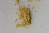

DOCUMENTATION_FORMAT: MINERAL
SAMPLE_ID: GDS98
MINERAL_TYPE: Sulfate
MINERAL: Jarosite (K-Jarosite) (Synthetic) (Alunite group)
FORMULA: K(Fe+3)3(SO4)2(OH)6
FORMULA_HTML: KFe+33(SO4)2(OH)6
COLLECTION_LOCALITY: Synthetic
ORIGINAL_DONOR: Roger Stroffregen, SMU
CURRENT_SAMPLE_LOCATION: USGS Denver Spectroscopy Laboratory
ULTIMATE_SAMPLE_LOCATION: USGS Denver Spectroscopy Laboratory
SAMPLE_DESCRIPTION:
Sample synthesized at 90C
IMAGE_OF_SAMPLE:

END_SAMPLE_DESCRIPTION.
XRD_ANALYSIS:
40 kV - 30 mA, 7.3-6.5 keV
Reference: JCPDS #22-827 (jarosite)
Found: Jarosite
Comment: Sharp patterns (GDS99 is exceptional) indicate good
crystallinity and compositional homogeneity. All
reflections are accounted for by the JCPDS card.
However, the samples are not identical. GDS98 has
cell hexagonal dimensions a = 7.313(1) and c = 17.060(4)
Angstroms whereas GDS99 has a = 7.302(1) and c = 17.214(2)
Angstroms. The difference in c is significant and suggests
a composition difference between the two samples. Are there
differences in the optical spectra?"
J.S. Huebner, J. Pickrell, and J. Randow, 1993, written communication.
END_XRD_ANALYSIS.
COMPOSITIONAL_ANALYSIS_TYPE: None # XRF, EPMA, ICP(Trace), WChem
COMPOSITION_TRACE:
COMPOSITION_DISCUSSION:
END_COMPOSITION_DISCUSSION.
MICROSCOPIC_EXAMINATION:
END_MICROSCOPIC_EXAMINATION.
SPECTROSCOPIC_DISCUSSION:
There is a slight longward shift to the 2.26 micron absorption in the Beckman spectrum relative to the more accurate position of this same band in the Nicolet FTIR data. The other bands in the Beckman spectrum appear to match those of the nicolet data better.
END_SPECTROSCOPIC_DISCUSSION.
SPECTRAL_PURITY: 1a2a3a4_ # 1= 0.2-3, 2= 1.5-6, 3= 6-25, 4= 20-150 microns
{kind=link}